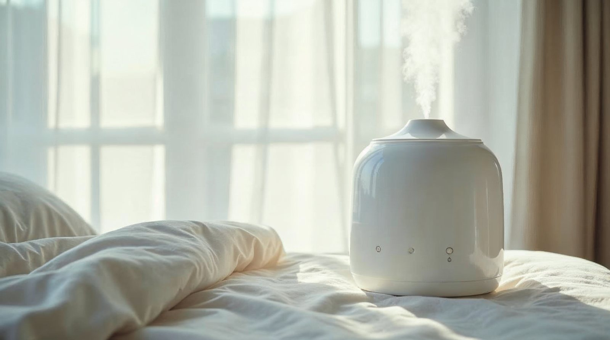
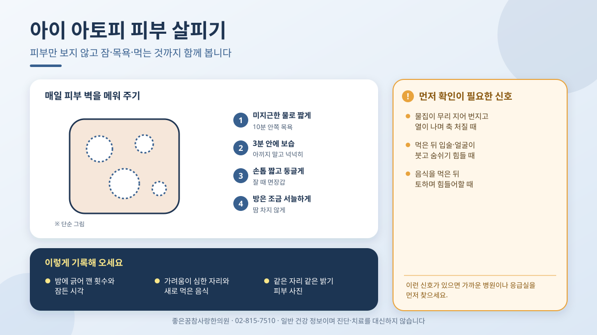

이종호 한의사 감수좋은꿈참사랑한의원 대표원장 (한의사 면허번호 19769)발행 2026-11-26 · 수정 2026-11-26
이 글의 차례
밤 열두 시가 넘은 시각, 아이 방에서 사각사각 긁는 소리가 들립니다. 불을 켜 보면 아이는 잠든 채로 팔 안쪽과 무릎 뒤를 긁고 있고, 이불에는 작은 핏자국이 묻어 있습니다. 손을 살며시 잡아 주면 잠깐 멈췄다가 다시 긁기 시작합니다.
진료실에서 아토피 아이를 둔 부모님을 만나면 눈 밑이 먼저 보입니다. 아이와 함께 밤을 새운 얼굴이지요. "제가 뭘 잘못 먹여서 그런 걸까요." 이 말씀을 정말 자주 듣습니다. 저는 그때마다 부모 탓으로 생기는 병이 아니라는 말씀부터 드립니다.
아토피 피부염은 피부의 보호막이 약해 바깥 자극에 쉽게 반응하고, 그래서 가렵고 긁고 다시 가려운 고리가 생기는 상태입니다. 한 가지 원인을 찾아 없애면 끝나는 문제라기보다, 피부와 잠과 생활을 함께 다독이며 오래 지켜보는 일에 가깝습니다.
그래서 저는 아토피 상담을 할 때 피부만 보지 않습니다. 아이가 몇 시에 자는지, 목욕은 어떻게 하는지, 집 안이 얼마나 건조한지, 무엇을 먹고 변은 어떤지까지 함께 여쭙니다. 피부에 드러난 것은 하루 전체의 흐름이 모인 결과인 경우가 많기 때문입니다.
아토피 피부염은 어떤 모습으로 나타나나요?
아기 때는 볼과 이마, 머리, 팔다리 바깥쪽에 붉고 진물이 나는 모양으로 시작하는 경우가 많습니다. 걷기 시작하고 자라면서는 팔꿈치 안쪽, 무릎 뒤, 목, 손목, 발목처럼 접히는 자리로 옮겨 가는 경우가 흔합니다.
오래 긁은 자리는 피부가 두꺼워지고 거칠어지며, 색이 짙어지기도 합니다. 피부 전체가 푸석하게 건조하고, 눈 밑이 어둡거나 귀 아래가 갈라지는 아이도 있습니다. 같은 아이라도 계절과 컨디션에 따라 좋아졌다 나빠졌다를 되풀이하는 것이 특징입니다.
가족 중에 아토피, 알레르기 비염, 천식이 있는 경우가 많고, 한 아이에게 이 셋이 시기를 달리해 나타나기도 합니다. 그래서 피부를 볼 때 코와 숨소리도 함께 여쭙니다.
왜 아토피 피부는 쉽게 가렵고 쉽게 덧날까요
건강한 피부 바깥층은 벽돌과 시멘트처럼 촘촘해서 수분이 빠져나가지 않고 자극이 쉽게 들어오지 못합니다. 아토피 피부는 이 벽이 성글어 수분이 빨리 날아가고, 먼지나 땀, 세제 같은 자극이 쉽게 스며듭니다.
자극이 들어오면 피부는 가려움으로 반응합니다. 긁으면 잠깐 시원하지만 피부 벽은 더 상하고, 상한 자리는 더 가려워집니다. 이 고리가 밤에 특히 심해지는 이유는 몸이 따뜻해지고, 낮 동안 다른 데 쏠렸던 주의가 가려움으로 모이기 때문입니다.
긁어서 생긴 상처로 세균이 들어가면 진물과 노란 딱지가 생기며 덧나기도 합니다. 그래서 손톱 관리와 긁은 자리를 깨끗하게 지키는 일이 생각보다 중요합니다.
한의학에서는 이런 피부를 두고 몸 안의 열과 건조함, 그리고 소화의 흐름을 함께 봅니다. 쉽게 얼굴이 붉어지고 땀이 많으며 변이 굳는 아이, 반대로 입이 짧고 쉽게 지치며 피부가 창백하게 마른 아이는 같은 아토피라도 살피는 방향이 조금 다릅니다. 그래서 피부만큼 아이의 체질과 생활을 함께 여쭙습니다.
보습제는 어떻게 고르고 바르나요?
보습제는 비싼 것보다 아이 피부에 잘 맞고 넉넉히 바를 수 있는 것이 좋습니다. 향과 색소가 적은 제품을 고르고, 처음 쓰는 제품은 팔 안쪽 작은 자리에 하루 이틀 발라 보며 붉어지지 않는지 먼저 확인해 보세요.
로션은 가볍게 퍼지지만 금방 마르고, 크림이나 연고 형태는 조금 끈적이지만 오래 머뭅니다. 겨울과 밤에는 진한 것을, 여름과 낮에는 가벼운 것을 쓰는 식으로 나눠 쓰셔도 됩니다.
바를 때는 문지르기보다 털이 난 방향으로 살살 펴 바르고, 얇게 여러 번보다 한 번에 넉넉히 바르는 편이 좋습니다. 처방 연고와 함께 쓴다면 어느 쪽을 먼저 바를지 처방한 선생님께 여쭤 순서를 정해 두세요.
음식 때문일까 걱정될 때
아토피 아이를 둔 부모님이 가장 먼저 의심하시는 것이 음식입니다. 실제로 어떤 음식을 먹은 뒤 몇 분에서 몇 시간 안에 두드러기가 돋거나 입 주위가 붓는다면 음식 알레르기를 따로 확인해 볼 필요가 있습니다.
하지만 뚜렷한 반응 없이 여러 음식을 한꺼번에 끊으면 성장기 아이의 영양이 부족해질 수 있습니다. 의심되는 음식이 있다면 혼자 판단하기보다 먹은 것과 피부 변화를 함께 적어 두고, 소아청소년과에서 필요한 검사를 상의해 보시는 편이 안전합니다.
진료실에서도 음식은 하나씩 살펴봅니다. 밀가루나 단 간식, 기름진 음식을 많이 먹은 다음 날 가려움이 늘어나는 흐름이 보이는 아이도 있어, 기록을 보며 줄일 것을 작게 정합니다.
다른 피부 질환과 어떻게 다른가요
땀띠는 땀이 차는 자리에 좁쌀처럼 오돌토돌하게 생기고, 시원하게 해 주면 금세 가라앉는 편입니다. 기저귀 발진은 기저귀가 닿는 자리에 한정되는 경우가 많습니다. 아토피는 건조함과 가려움이 오래가고, 접히는 자리에 되풀이된다는 점이 다릅니다.
지루 피부염은 머리와 눈썹, 코 옆처럼 기름이 많은 자리에 노란 비듬 같은 각질이 생기고, 가려움은 덜한 경우가 많습니다. 동전 모양으로 진물이 나는 습진이나 곰팡이 감염처럼 비슷해 보이는 경우도 있어, 처음이라면 소아청소년과나 피부과 진료로 진단을 받아 두시길 권합니다.

계절에 따라 피부는 어떻게 달라지나요?
겨울에는 바깥 공기가 차고 건조한 데다 난방까지 더해져 피부의 물기가 빠르게 날아갑니다. 정강이와 팔 바깥쪽이 하얗게 일어나고, 밤에 이불 속이 따뜻해지면 가려움이 몰려오는 아이가 많습니다. 이 시기에는 보습제를 조금 더 진한 것으로 바꾸고 바르는 횟수를 늘려 보세요.
여름에는 땀이 문제입니다. 땀이 접히는 자리에 고였다가 마르면서 소금기가 피부를 자극하고, 땀띠까지 겹치면 어디까지가 아토피인지 헷갈리게 됩니다. 땀을 흘린 뒤에는 물로 가볍게 헹구거나 젖은 수건으로 닦아 주고, 통풍이 잘되는 옷을 입혀 주세요.
봄과 가을 환절기에는 일교차와 꽃가루, 미세먼지가 함께 옵니다. 이때 코가 막히고 재채기가 늘면서 피부도 같이 올라오는 아이가 있습니다. 바깥에서 돌아오면 손과 얼굴을 씻기고, 옷을 갈아입히는 것만으로도 자극을 조금 줄일 수 있습니다.
어린이집과 학교에서는 어떻게 하나요
아이가 낮 동안 집 밖에 있으면 보습이 끊기기 쉽습니다. 작은 용기에 보습제를 담아 가방에 넣어 두고, 선생님께 점심 뒤나 바깥 놀이 뒤에 한 번 발라 달라고 부탁드려 보세요. 손톱이 길어지지 않게 주말마다 다듬어 주시는 것도 좋습니다.
친구들이 피부를 보고 묻는 일이 생기면 아이가 위축되기도 합니다. 집에서 "피부가 조금 건조해서 약을 바르는 거야"처럼 아이가 스스로 설명할 수 있는 짧은 말을 함께 연습해 두면 도움이 됩니다.
먼저 이렇게 여쭙니다
처음 오시면 대략 이런 순서로 여쭙니다. 아이와 함께 생각해 오시면 이야기가 수월해집니다.
- 처음 피부가 올라온 때와 지금까지 좋아지고 나빠진 흐름
- 지금 바르는 연고와 보습제, 먹는 약의 이름과 횟수
- 하루 목욕 횟수와 물 온도, 쓰는 세정제
- 밤에 긁느라 깨는 횟수와 잠드는 시각
- 먹은 뒤 가려움이 늘었던 음식이 있는지
- 대변이 굳거나 묽은지, 땀은 많은 편인지
모든 질문에 정확히 답하지 못하셔도 괜찮습니다. 아이가 가장 불편해 보였던 날의 사진 몇 장과 지금 쓰는 제품만 가져오셔도 이야기의 절반은 시작된 셈입니다.
일상에서 먼저 해 볼 수 있는 것
아토피 관리의 바탕은 보습입니다. 피부 벽이 성글다면 그 틈을 매일 메워 주는 것이지요. 한꺼번에 많은 것을 바꾸기보다 아래 가운데 몇 가지를 골라 꾸준히 해 보세요.
- 목욕은 미지근한 물로 짧게, 10분 안쪽으로 마치기
- 목욕 뒤 물기를 톡톡 두드려 닦고 3분 안에 보습제 바르기
- 보습제는 아끼지 말고 하루 두세 번 넉넉히 바르기
- 손톱을 짧고 둥글게 다듬고, 잘 때 면장갑 써 보기
- 피부에 닿는 옷은 부드러운 면으로, 새 옷은 한 번 빨아서 입히기
- 실내 습도는 너무 건조하지 않게, 방은 덥지 않게
방이 더우면 땀이 나고 가려움이 늘어납니다. 아이가 잘 때 이불을 두껍게 덮어 주고 싶은 마음이 들지만, 조금 서늘하다 싶은 온도가 가려움에는 오히려 편할 수 있습니다.
세정제는 향이 강하지 않은 것으로 고르고, 땀이 많이 차는 목과 접히는 자리 위주로만 쓰셔도 됩니다. 온몸을 매일 세게 문지르면 피부 벽이 더 약해질 수 있습니다.
긁지 말라는 말은 아이에게 잘 통하지 않습니다. 가려워하면 차가운 물수건을 잠깐 대 주거나, 긁는 대신 손바닥으로 꾹 눌러 주는 방법을 함께 연습해 보세요. 아이가 긁을 때마다 혼내기보다 손을 다른 놀이로 바쁘게 해 주는 편이 오래갑니다.
잠도 피부와 가깝습니다. 늦게 자고 자주 깨는 날이 이어지면 다음 날 가려움을 더 크게 느끼는 아이가 많습니다. 잠드는 시각을 일정하게 맞추고, 잠들기 전 화면 보는 시간을 줄이는 것부터 시작해 보세요.
한의원에서 함께 살필 수 있는 경우
- 보습과 처방 연고를 쓰는데도 가려움으로 밤잠을 자주 깨는 경우
- 계절이 바뀌거나 감기를 앓고 나면 피부가 되풀이해 나빠지는 경우
- 입이 짧거나 변이 굳는 등 소화와 대변이 함께 불편한 경우
- 땀이 많거나 쉽게 열이 오르면서 가려움이 늘어나는 경우
- 비염이나 잦은 감기가 함께 있어 몸 전체를 살피고 싶은 경우
좋은꿈참사랑한의원에 오시면 맥을 짚고 피부의 모양과 건조함, 긁은 자리를 살펴본 뒤 잠과 소화, 대변, 땀을 함께 여쭙니다. 진찰한 내용을 바탕으로 생활에서 바꿔 볼 것 하나와 함께 지금 아이에게 맞는 방법을 정합니다.
한약을 상의할 때는 아이의 나이와 체중, 지금 먹거나 바르는 약을 모두 확인하고 신중하게 정합니다. 침이 필요하다고 판단되면 아이가 겁먹지 않도록 짧고 가볍게 진행하며, 아이가 싫어하면 다른 방법을 찾습니다. 소아청소년과와 피부과 치료는 그대로 이어 가시면서 나란히 살핀다고 생각해 주시면 됩니다.
이렇게 기록해 오시면 상담이 쉬워집니다
아토피는 하루 사이에도 오르내림이 있어서, 진료실에서 한 번 본 피부보다 집에서 쌓은 기록이 훨씬 많은 것을 알려 줍니다. 2주 정도만 간단히 적어 보세요.
- 밤에 긁느라 깬 횟수와 잠든 시각
- 가려움이 가장 심했던 자리와 시간대
- 목욕과 보습제 바른 횟수
- 새로 먹은 음식이나 간식
- 덥거나 땀을 많이 흘린 날, 감기 기운이 있던 날
- 같은 자리를 같은 밝기에서 찍은 사진
빠진 날이 있어도 괜찮습니다. 기록을 나란히 놓고 보면 가려움이 심했던 날과 생활 사이의 연결이 보이기 시작하고, 그것이 다음 걸음을 정하는 실마리가 됩니다.
오래 함께 지켜보는 피부를 위해
아토피는 자라면서 가벼워지는 아이도 많지만, 그 과정이 곧게 이어지지는 않습니다. 좋아졌다가 계절이 바뀌며 다시 올라오는 일이 반복되면 부모님 마음도 같이 오르내리게 됩니다.
밤마다 아이 곁에서 잠을 설치다 보면 부모님이 먼저 지치십니다. 보습과 기록을 한 사람이 도맡기보다 가족이 요일을 정해 나눠 맡고, 부모님도 쉬는 시간을 꼭 만들어 두세요. 지친 마음으로는 오래 지켜보기 어렵고, 아이도 부모님의 표정을 먼저 읽습니다.
그럴 때는 한 번 나빠진 날보다 한 달의 흐름을 보세요. 밤에 깨는 횟수가 줄었는지, 긁은 상처가 빨리 아무는지 같은 작은 변화가 쌓이는지 보는 것입니다. 이번 주에는 목욕 뒤 3분 보습 하나만 정해 보세요. 욕실 문 앞에 보습제를 놓아 두면 잊지 않고 이어 가기가 한결 쉬워집니다. 다음에 오시면 그 기록부터 함께 펼쳐 보겠습니다.
이런 증상은 먼저 확인이 필요합니다
- 아토피 자리에 물집이 무리 지어 번지고 열이 나며 아이가 축 처지는 경우
- 음식을 먹은 뒤 입술이나 얼굴이 붓고 숨쉬기 힘들어하거나 토하는 경우
이런 신호가 있으면 한의원보다 가까운 병원이나 응급실을 먼저 찾으세요.
함께 읽으면 좋은 글
- 가려움이 낮에 심한지 밤에 심한지는 왜 묻고, 어떻게 적어 두나요?
- 아이가 아침마다 재채기와 맑은 콧물, 코막힘을 달고 사는 알레르기 비염은 어떻게 살피나요?
- 잠이 부족하면 피부가 푸석하고 트러블이 나는 이유는 무엇인가요?
- 여름에 땀이 차는 곳마다 붉은 좁쌀 같은 것이 올라올 때는 어떻게 살피나요?
- 아이가 감기에 자주 걸리고 코가 막힐 때는 어떤 점을 살펴보나요?

여쭙는 것
- 처음 피부가 올라온 때와 지금까지 좋아지고 나빠진 흐름
- 지금 바르는 연고와 보습제, 먹는 약의 이름과 횟수
- 하루 목욕 횟수와 물 온도, 쓰는 세정제
생활에서 해 볼 것
- 목욕은 미지근한 물로 짧게, 10분 안쪽으로 마치기
- 목욕 뒤 물기를 톡톡 두드려 닦고 3분 안에 보습제 바르기
- 보습제는 아끼지 말고 하루 두세 번 넉넉히 바르기
한의원에서 함께 살필 것
- 보습과 처방 연고를 쓰는데도 가려움으로 밤잠을 자주 깨는 경우
- 계절이 바뀌거나 감기를 앓고 나면 피부가 되풀이해 나빠지는 경우
- 입이 짧거나 변이 굳는 등 소화와 대변이 함께 불편한 경우
먼저 확인이 필요한 신호
- 아토피 자리에 물집이 무리 지어 번지고 열이 나며 아이가 축 처지는 경우
- 음식을 먹은 뒤 입술이나 얼굴이 붓고 숨쉬기 힘들어하거나 토하는 경우
한눈에 보는 표
| 구분 | 핵심 |
|---|---|
| 여쭙는 것 | 처음 피부가 올라온 때와 지금까지 좋아지고 나빠진 흐름 지금 바르는 연고와 보습제, 먹는 약의 이름과 횟수 |
| 생활에서 해 볼 것 | 목욕은 미지근한 물로 짧게, 10분 안쪽으로 마치기 목욕 뒤 물기를 톡톡 두드려 닦고 3분 안에 보습제 바르기 |
| 한의원에서 함께 살필 것 | 보습과 처방 연고를 쓰는데도 가려움으로 밤잠을 자주 깨는 경우 계절이 바뀌거나 감기를 앓고 나면 피부가 되풀이해 나빠지는 경우 |
| 먼저 확인이 필요한 신호 | 아토피 자리에 물집이 무리 지어 번지고 열이 나며 아이가 축 처지는 경우 음식을 먹은 뒤 입술이나 얼굴이 붓고 숨쉬기 힘들어하거나 토하는 경우 |
자주 묻는 질문
스테로이드 연고를 쓰고 있는데 한의원 진료를 같이 받아도 되나요?
함께 받으셔도 됩니다. 처방받은 연고는 처방한 선생님의 안내대로 이어 가시고, 바르는 횟수와 이름을 알려 주시면 그에 맞춰 진료 방향을 정합니다.
아토피가 있으면 우유나 달걀을 끊어야 하나요?
뚜렷한 반응 없이 여러 음식을 끊으면 영양이 부족해질 수 있습니다. 의심되는 음식이 있다면 먹은 것과 피부 변화를 기록해 소아청소년과에서 필요한 검사를 상의해 보세요.
목욕은 매일 해도 되나요?
미지근한 물로 짧게 하고 바로 보습제를 바른다면 매일 하셔도 괜찮습니다. 뜨거운 물로 오래 씻거나 세게 문지르는 것은 피하시는 것이 좋습니다.
아이도 한약을 먹을 수 있나요?
아이의 나이와 체중, 지금 먹거나 바르는 약을 모두 확인한 뒤 신중하게 정합니다. 진찰 후 필요하다고 판단될 때 상의하며, 먹기 어려워하면 다른 방법을 함께 찾습니다.
아토피는 크면 저절로 좋아지나요?
자라면서 가벼워지는 아이가 많지만 아이마다 흐름이 다릅니다. 보습과 생활 관리를 꾸준히 이어 가며 계절별로 피부 변화를 지켜보는 것이 도움이 됩니다.
좋은꿈참사랑한의원은 재진 때 지난번 이야기부터 이어서 여쭙니다. 진료시간과 예약은 오시는 길에서 확인하세요.
어디서 상담받을 수 있나요?
좋은꿈참사랑한의원은 서울 동작구 만양로2길 2 신성빌딩 3층·5층(서울 동작구 상도동, 7호선 상도역 3번 출구 근처)에 있습니다. 한의사 3명(이종호 대표원장, 조영기 수석진료원장, 정원영 진료원장)이 진료합니다. 진료시간은 평일 09:30~20:00(점심 13:00~14:00), 토·일·공휴일 09:30~15:00이며, 방문 전 전화로 확인을 권합니다. 예약은 네이버 예약, 카카오톡 상담, 전화 02-815-7510로 받습니다.
이 글은 일반적인 건강 정보이며 개인의 진단이나 치료를 대신하지 않습니다. 증상이 있거나 복용 중인 약이 있다면 진료를 통해 확인하세요. 치료 효과는 개인마다 다를 수 있습니다.
작성 기준: 일반적으로 알려져 있는 건강 정보를 참고해 정리했습니다(대표원장 감수). 증상 기록은 1~2주 동안 하루 1회, 비슷한 시간에 적어 오시면 지난 상태와 비교하기 쉽습니다.